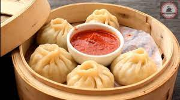

Gajar halwa
- 1 kg carrot
- ¼ cup ghee / clarified butter
- 10 cashew / kaju, chopped
- 10 almonds / badam, chopped
- 3 cup milk
- ¾ cup sugar
- ½ cup khoya / mawa
- ¼ tsp cardamom powder
Ingredients
- firstly, peel the skin of carrot and grate finely. keep aside. traditionally, delhi carrot is used to prepare halwa.
- in a large kadai heat ¼ cup ghee and fry 10 cashew, 10 almonds.
- fry until it turns golden brown. keep aside.
- in the same ghee add grated carrot and saute well.
- saute for 5 minutes or until it changes colour slightly.
- now pour 3 cup milk and give a good stir.
- boil for 10 minutes stirring occasionally.
- continue to boil until the carrots are cooked well and milk reduces.
- once the milk thickens completely, add ¾ cup sugar.
- mix well and cook until the sugar dissolves and thickens.
- cook until the halwa thickens and ghee releases from sides.
- now turn off the flame and ½ cup khoya, ¼ tsp cardamom powder and fried nuts.
- mix well making sure everything is well combined.
- finally, enjoy gajar ka halwa or carrot halwa chilled or warm.
Recipe

Momo
- 3/4 cup All Purpose Flour (Maida)
- 1 teaspoon Oil
- Salt to taste
Ingredients
Ingredients for Dough:- For Stuffing:
- 1 tablespoon Oil
- 3-4 cloves of Garlic, finely chopped
- 1 teaspoon finely chopped Ginger
- 1/2 cup finely chopped Carrot
- 1/2 cup finely chopped Cabbage
- 1/4 cup finely chopped Capsicum
- 1/4 cup finely chopped Green French Beans (fanasi)
- 1/4 cup finely chopped Green Onion or Onion
- ½-1 teaspoon Soy Sauce
- 1/2 teaspoon Black Pepper Powder
- Salt to taste
- Mix the maida, salt and baking powder and knead to a stiff dough with water.
- Heat oil and add the onion and garlic. Saute over high heat and add the carrot and cabbage. Turn around over high heat till glossy.
- Take it off the heat and mix in the soya sauce, salt, vinegar and black pepper.
- Roll the dough thin (translucent) and cut into 4"-5" rounds.
- Take a round, wet edges and place some filling in the center.
- Bring edges together to cover the filling. Twist to seal and fill the rest in the same
- Steam for about 10 minutes and serve with soya sauce and chilli sauce.
Recipe

Samosa
- 1 cup all purpose flour (Maida)
- Water to Knead dough
- 2 tbsp oil
- Little salt
- 1/4th tsp. Ajwain (optional)
ingredients
For Cover:- For Stuffing:
- 3-4 Potatoes (boiled, peeled & mashed)
- 1/2 cup Green Peas (boiled)
- 1-2 Green Chilies (finely chopped)
- 1/2 tsp Ginger (crushed)
- 1 tbsp coriander finely chopped
- Few chopped Cashews (optional)
- Few Raisins (optional)
- 1/2 tsp Garam masala
- 1/2 tsp Ginger (crushed)
- Salt to taste
- Red chili powder to taste
- 1/2 tsp. Dry Mango powder( Amchur) (optional)
- Mix all the ingredients (salt, oil, ajwain) except water.
- Add a little water at a time.
- Pat and knead well for several times into a soft pliable dough.
- Cover it with moist Muslin cloth and keep aside for 15 minutes.
Recipe
For Cover:- For Stuffing :
- In a bowl add mashed potatoes and all dry masalas (salt, chili powder, mango powder, garam masala) and green chilles, ginger and Mix well.
- Add green peas, cashews and raisins and mix well.
- Add coriander and keep aside.
- To make samosas :
- Make small rolls of dough and roll it into a 4″ diameter circle.
- Cut it into two parts like semi-circle.
- Now take one semi circle and fold it like a cone. Use water while doing so.
- Place a spoon of filling in the cone and seal the third side using a drop of water.
- Heat oil in a kadhai and deep fry till golden brown (fry on a medium flame).
- Serve samosa hot with hari chutney, tamarind chutney.